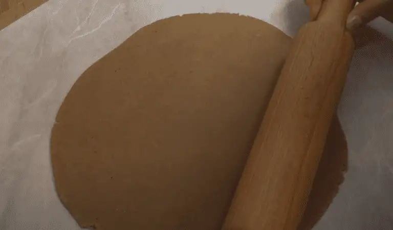

Классический рецепт имбирного печенья

Рецептов имбирного печенья очень много. Предлагаю любимый рецепт моего семейства.
Описание приготовления:
Классический рецепт имбирного печенья в домашних условиях подойдет новичкам и опытным кондитерам.
Ароматный десерт можно приготовить на новогодние праздники, к любому семейному чаепитию.
Из указанного количества ингредиентов получится около 70 маленьких имбирных печенек.
Ингредиенты для теста:
- мед - 100 мл
- сахарный песок - 100 грамм
- сливочное масло - 100 грамм
- мука - 360 грамм
- яйцо - 1 шт. и 1 желток
- сода - 5 грамм
- щепотка соли
- имбирь, корица - по 5 грамм
- гвоздика - 1/3 чайной ложки
Ингредиенты для глазури:
- белок - 1 шт.
- сахарная пудра - 170 грамм
- сок лимона - 5 мл
Как приготовить:
- В кастрюле соединить все ингредиенты, кроме соды, яиц и муки.
- Нагревать на слабом огне до однородной консистенции, постоянно перемешивать деревянной или силиконовой
лопаткой.
- Смесь немного остудить, добавить соду.
- В остывшую смесь ввести яйца, постепенно всыпать муку.
- Готовое тесто по консистенции напоминает мягкий пластилин, не липнет к рукам.Его нужно собрать в шар,
обернуть пленкой, убрать в холод на 40-60 минут.
- Охлажденное тесто разрезать на несколько частей, каждый кусок поочередно раскатывать до толщины 3-4 мм.

- Духовку прогреть до 180 градусов.
- Вырезать фигурки из теста, переложить на противень, застеленный пергаментом.
- Выпекать печенье 5-7 минут. Можно сверху немного прижать готовые горячие имбирные пряники,
чтобы они стали более плоскими. В горячих изделиях сделать дырочки, чтобы печенье можно было вешать на елку.
- Для глазури белок немного взбить, постепенно добавлять просеянную сахарную пудру, лимонный сок.
Глазурь для рисования должна быть густой, не вытекать из мешка без усилий, линии должны быть непрерывными.

Рецепт имбирного печенья простой, редкие или дорогостоящие ингредиенты не нужны.
Но потратив немного сил и времени, можно получить ароматный и красивый десерт. Имбирные печеньки и пряники в виде разных
фигурок – неотъемлемый атрибут Рождества в европейских странах. Чаще всего их пекут вместе с детьми, что создает
атмосферу настоящего семейного праздника.
Рецептов имбирного печенья очень много, Вы из можете найти здесь Рецепты печенья